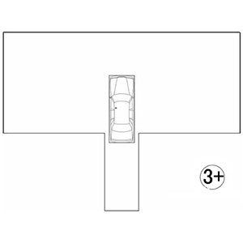
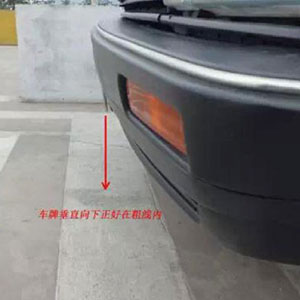
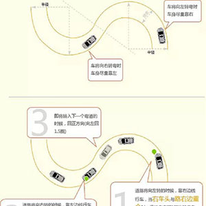

倒车入库技巧图解
自从驾考改革之后，考场上已经看不见标杆了，有的只是地上的黄线，而且还取消了移库...

侧方停车考试易出错点解析
据了解，科目二考试中，多数考生败在了侧方停车和倒车入库这两项中，对此，小编总结了侧方停车考试...
坡路定点停车和起步技巧
坡道起步最怕熄火、倒溜，要注意三个步骤，首先是轻带油门，慢松离合器；其次是一旦感觉车子已...

曲线行驶考试攻略
前期准备:首先调整座椅位置，使踩踏离合器和脚刹、油门时较舒服（尤其是便于使离合器处于半离合状态）...
